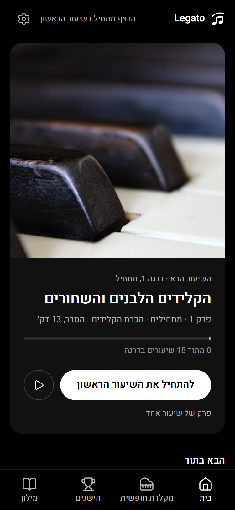
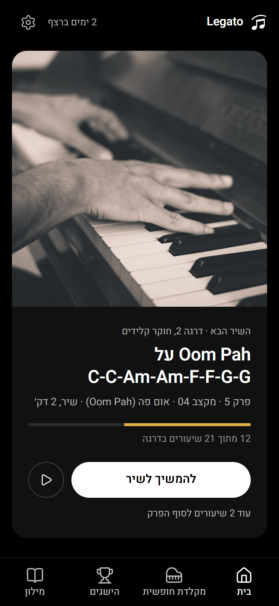
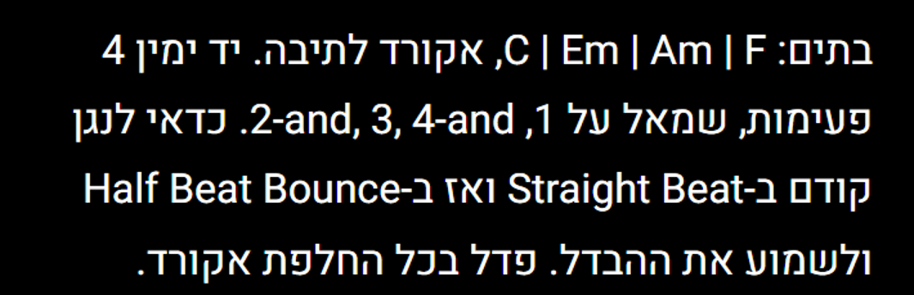
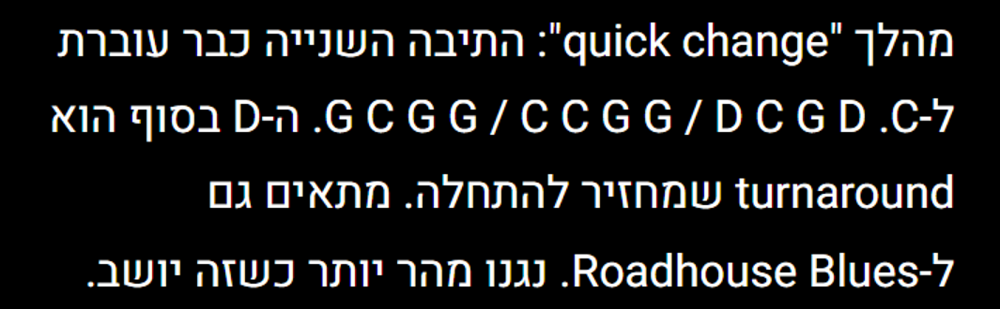
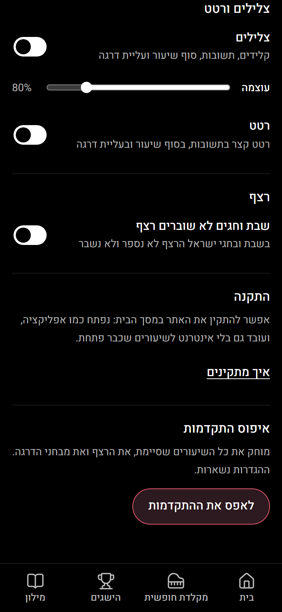
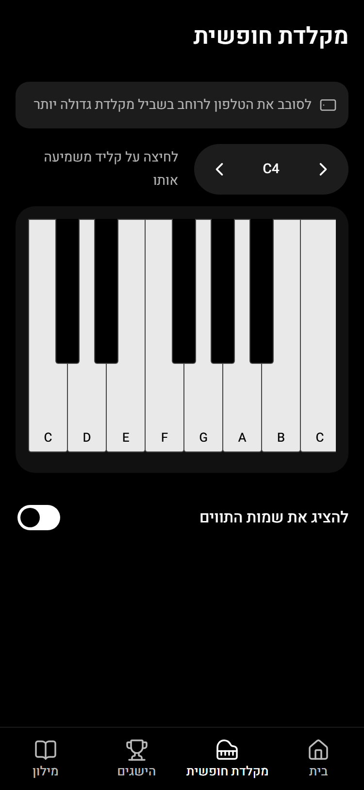
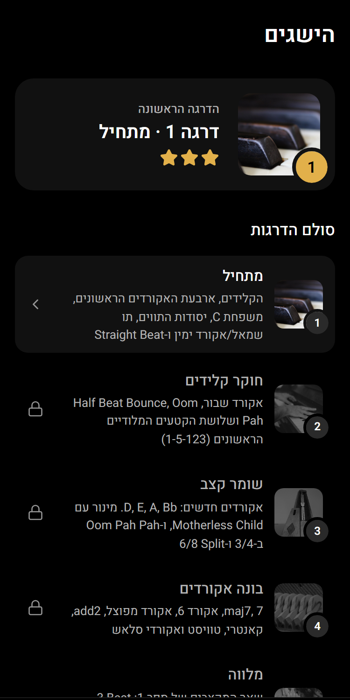

שלב 1 · תיקונים מהירים
צילומים ב-375px. האתר עצמו כבר מעודכן: yudisaiagent-cell.github.io/legato-looks/site
מסך הבית, לומד חדש
"השיעור הבא" במקום "מתנגן עכשיו" (שיעור שעוד לא פתחת). "פרק של שיעור אחד" במקום "השיעור האחרון בפרק".

מסך הבית, באמצע דרגה
כשהבא הוא שיר: "השיר הבא" ו"להמשיך לשיר". "מתנגן עכשיו" מופיע רק אחרי שפותחים שיעור ולא מסיימים.

מהלך אקורדים בשיר
לפני: האקורדים יצאו בסדר הפוך (F | Am | Em | C), ו-"1, 2-and, 3, 4-and" יצא מבולגן. עכשיו בסדר הנכון.

שיעור בלי "PDF: עמ'"
שורת ה-PDF נעלמה מכל 898 הפסקאות שהיו בהן. "ל-C." לא נדבק יותר לאקורדים שאחריו.

הגדרות, למטה
מתג כבוי עכשיו אפור ועמום, דלוק לבן. כפתור האיפוס וקישור ההתקנה גלויים מעל התפריט.

מקלדת חופשית
מתג שמות התווים דלוק (לבן) כשהשמות מוצגים. "לחיצה על קליד משמיעה אותו" במקום "לחצו".

הישגים
"(1-5-123)" בכיוון הנכון. התנאים של התגים בשם פועל: "להשלים", "לנגן", "לקבל".
